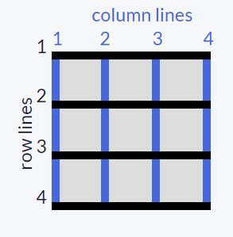

CSS grid is another way to lay items out. As the name suggests elements are placed into rows and column. Like flex, you set the display to grid to use all the features. Once you have set the display to grid you have to set the grids structure. This sets the number and size of rows and column. For example grid-template-columns: 100px 50px 100px; will set 3 columns with the sizes specified. grid-template-rows works the same way.
You can make the grid responsive by setting them to relative sizing units like em and other units:
Sometimes you might want to have space between your grid elements, grid-column-gap and grid-row-gap allow you to set this. You can also use [ grid-gap: row column] or [ grid-gap: both].
Placing and sizing items on the grid can be done with a few properties. When using them it important to know how grids are layed out. A 3x3 will have 4 lines like so:
You can use templates to assign sections of your page to cells. For example:
grid-template-areas:
"header header header"
"advert content content"
"footer footer footer";
This allows your header and footer to take 3 cells at the top/bottom, and splits your main area into a advert and content area. To assign elements to these place [ grid-area: location(like header); ] in its styles. You can also use grid-area to place items on the fly without a template. Then doing this it looks like: grid-area: horizontal line to start at / vertical line to start at / horizontal line to end at / vertical line to end at;
You can use the repeat function to create repetitive structures like so:
grid-template-columns: repeat(2, 1fr 50px) 20px;
=
grid-template-columns: 1fr 50px 1fr 50px 20px;
You can set the number of times to repeat to the value "auto-fill". This will allow as many as will fit creating a flow. There is also auto-fit. auto-fit works almost identically to auto-fill. The only difference is that when the container's size exceeds the size of all the items combined, auto-fill keeps inserting empty rows or columns and pushes your items to the side, while auto-fit collapses those empty rows or columns and stretches your items to fit the size of the container.
You can further control sizing with the minmax function like so:
grid-template-columns: 100px minmax(50px, 200px);
creates two columns; the first is 100px wide, and the second 50-200px.
Just like with flex you can stack grids within grids to get the look you want!